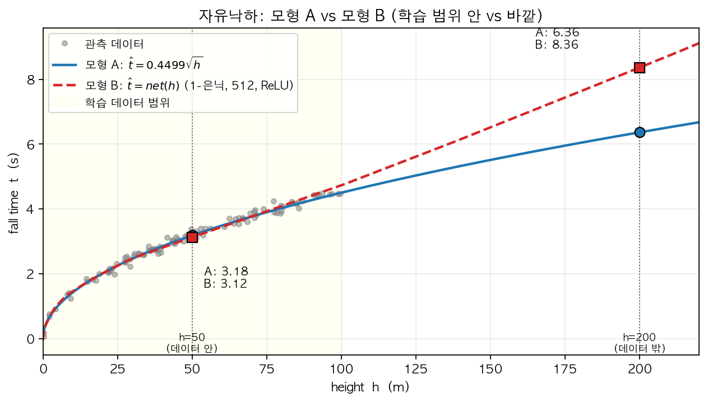

Quiz-15 (2027.04.27) // 범위: ~07wk
1. 단순 로지스틱의 표현력: 8가지 데이터
다음 네트워크 (은닉층 없음, 단순 로지스틱) 를 고려하자.
torch.nn.Sequential(
torch.nn.Linear(2, 1),
torch.nn.Sigmoid()
)이제 입력이 \(x_1, x_2 \in \{-1, 0, 1\}\) 인 9개의 점에 대해 \(y \in \{0, 1\}\) 이 정의되는 다음 8가지 데이터 (\(D_1\) ~ \(D_8\)) 의 진리표를 모두 나열한 것이다.
8가지 데이터를 다음 4가지 구조 로 분류하시오.
참고 — “단조 (monotonic)” 의 뜻: 한 변수가 증가할 때 다른 변수가 한 방향으로만 변하는 관계. 즉 계속 증가만 하거나 (단조 증가), 계속 감소만 함 (단조 감소). 중간에 방향이 뒤집히지 않음. 예: \(y = 2x\) 는 단조 증가, \(y = -x + 1\) 은 단조 감소, \(y = x^2\) 는 단조가 아님 (감소했다가 증가).
- (가) 상수: \(y\) 가 항상 0 또는 항상 1 (입력과 무관)
- (나) 한 입력에 대한 단조: \(y\) 가 \(x_1\) 또는 \(x_2\) 한 변수에 대해서만 단조로 결정됨 (다른 한 변수는 영향없음)
- (다) 두 입력 모두에 대한 단조: 두 입력 모두 \(y\) 에 영향을 주며, 각각 단조 관계를 유지
- (라) 설명불가: 단조 관계로는 설명할 수 없는 구조
(가) - (라) 중 위에서 제시도니 은닉층이 없는 네트워크로 설명불가능한 경우는 무엇인가?
| 구조 | 해당 데이터 |
|---|---|
| (가) 상수 | \(D_1\), \(D_2\) |
| (나) 한 입력에 대한 단조 | \(D_3\), \(D_4\) |
| (다) 두 입력 모두에 대한 단조 | \(D_5\), \(D_6\) |
| (라) 설명불가 | \(D_7\), \(D_8\) |
각 입력 값을 고정했을 때의 \(y\) 평균 trend — 예를 들어 “\(x_1{=}{-}1\) 의 \(\bar{y}\)” 는 \(x_1\) 을 \(-1\) 로 고정한 채 \(x_2\) 를 \(-1, 0, 1\) 로 바꾼 3개 점의 \(y\) 평균.
| # | \(x_1\) 에 따른 \(\bar{y}\) | \(x_2\) 에 따른 \(\bar{y}\) | 분류 | ||||||||||||||||
|---|---|---|---|---|---|---|---|---|---|---|---|---|---|---|---|---|---|---|---|
| \(D_1\) |
|
|
\(x_1\) 효과: 상수
\(x_2\) 효과: 상수
→ 분류: (가)
|
||||||||||||||||
| \(D_2\) |
|
|
\(x_1\) 효과: 상수
\(x_2\) 효과: 상수
→ 분류: (가)
|
||||||||||||||||
| \(D_3\) |
|
|
\(x_1\) 효과: 단조 ↑
\(x_2\) 효과: 상수
→ 분류: (나)
|
||||||||||||||||
| \(D_4\) |
|
|
\(x_1\) 효과: 상수
\(x_2\) 효과: 단조 ↓
→ 분류: (나)
|
||||||||||||||||
| \(D_5\) |
|
|
\(x_1\) 효과: 단조 ↑
\(x_2\) 효과: 단조 ↑
→ 분류: (다)
|
||||||||||||||||
| \(D_6\) |
|
|
\(x_1\) 효과: 단조 ↑
\(x_2\) 효과: 단조 ↓
→ 분류: (다)
|
||||||||||||||||
| \(D_7\) |
|
|
\(x_1\) 효과: 설명불가
\(x_2\) 효과: 설명불가
→ 분류: (라)
|
||||||||||||||||
| \(D_8\) |
|
|
\(x_1\) 효과: 설명불가
\(x_2\) 효과: 설명불가
→ 분류: (라)
|
4가지 구조 중 (라)는 스펙의 역설처럼 \(x_1 \to y\) , \(x_2 \to y\)의 규칙이 증가/감소가 아니라 꺽인선형태이다. 이러한 구조는 은닉층이 없는 네트워크로 적합할 수 없음.
2. 도메인 지식, 시벤코, 그리고 “모든 모형은 틀렸다”
강의노트의 자유낙하 문제에서 우리는 두 가지 방식의 모형을 얻었다.
- 모형 A (전통적 모델링): 물리학 분야의 도메인 지식을 바탕으로 \(t \propto \sqrt{h}\) 라는 관계식을 가정하고, 이로부터 \(\hat{t}_i = \hat{w} \cdot \sqrt{h_i}\) 의 형태로 적합하였다 (적합 결과 \(\hat{w} \approx 0.4499\)).
- 모형 B (딥러닝식 모델링): 참모델에 대한 사전 가정 없이, 표현력이 충분히 큰 네트워크 (1-은닉층, 노드 512, ReLU) 를 사용하여 \(\hat{t}_i = net(h_i)\) 의 형태로 적합하였다.
모형 A: \(\hat{t} = \hat{w}\sqrt{h}\)

모형 B: \(\hat{t} = net(h)\)

강의노트에 따르면 두 모형은 새로운 입력 \(h=50\) 에 대해 서로 비슷한 예측값을 내놓았다.
다음은 위 두 모형과 George Box 의 명언
“All models are wrong, but some are useful.”
을 주제로 학생들이 나눈 심도있는 토론이다.
재현: “근데 두 모형이 \(h=50\) 에서 정확히 같은 값을 안 내는 건 좀 이상하지 않아? 물리적으로 정답은 하나일 거 아니야. 그렇다면 둘 중 적어도 하나는 틀린 거고, 어쩌면 둘 다 틀렸을 수도 있어.”
성재: “재현이 말이 일리 있어. ‘둘 다 틀렸다’ — 이게 사실 Box 가 말한 ‘all models are wrong’ 이랑 정확히 같은 얘기잖아. 두 모형이 다른 답을 낸다는 사실 자체가 둘 다 wrong 이라는 증거고, Box 도 결국 그런 의미로 한 말이지. 그러니까 재현이의 결론이 Box 의 메시지랑 딱 맞아떨어진 거야.”
슬기: “잠깐, 그건 Box 의 뉘앙스를 잘못 이해한 거야. Box 가 ‘all models are wrong’ 이라고 한 건 어떤 모형이든 현실을 단순화·이상화한 근사이기 때문에 본질적으로 wrong 이라는 뜻이지. Box 의 핵심은 모형들 사이의 비교가 아니라, 모형을 바라보고 평가하는 기준 자체를 ‘true vs wrong’ 이 아닌 ‘쓸모있음 vs 쓸모없음 (useful vs useless)’ 의 관점에서 가져가야 한다는 점을 역설하는 거야. ‘서로 다른 예측 → 적어도 하나 틀렸다’ 라는 비교 기준이 아니라고. 두 모형이 같은 값을 냈더라도 둘 다 여전히 useless 일 수 있고, 두 모델이 다른 값을 냈지만 두 모델 모두 useful일 수 있어.”
희석: “근데 시벤코의 정리는 1-은닉층 네트워크가 충분한 노드만 있으면 어떤 함수든 표현할 수 있다고 했잖아. 그렇다면 모형 B 도 데이터 뒤에 깔려 있는 underlying 함수 자체 — 즉 \(\sqrt{\cdot}\) 형태 — 를 그대로 식별 해서 학습한다고 봐야 하는 거 아니야? 모형 B 가 \(h=50\) 에서 모형 A 와 거의 같은 답을 낸 게 바로 그 증거고.”
은희: “그건 아니야. 모형 B 는 \(\sqrt{\cdot}\) 형태를 학습한 게 아니라, 주어진 데이터 위에서 모형 A 와 거의 비슷한 출력을 내는 어떤 함수 하나를 찾은 것 일 뿐이지. 두 모형이 \(h=50\) 에서 비슷한 값을 낸 것도 그 한 점에서 두 함수가 우연히 가까웠다는 의미일 뿐, 모형 B 가 \(\sqrt{\cdot}\) 형태를 학습했다는 증거는 되지 않아. 예를 들어 학습 데이터 범위 바깥인 \(h=200\) 같은 곳에서는 두 모형의 예측이 꽤 달라질 수 있어. 모형 A 는 \(\sqrt{\cdot}\) 곡선 을 그대로 따라가며 값을 내지만, 모형 B 는 본질적으로 ReLU 기반의 꺾인선 함수라서, 학습 데이터 끝 구간에서 학습된 마지막 직선 조각 이 그대로 이어지는 형태로 값을 내거든. 아래는 내가 실제로 두 모형을 적합해서 그려본 결과야.”

“보다시피 학습 데이터 범위 (노란색 구간) 안에서는 두 모형이 거의 일치하지만, 범위 바깥 \(h=200\) 에서는 모형 A 는 약 6.36, 모형 B 는 약 8.36 으로 두 모형의 예측에 꽤 차이가 나. 결국 시벤코는 근사 능력 의 보장이지 함수 형태 식별 능력의 보장은 아니라는 게 핵심이야.”
세민: “한 가지만 덧붙이자면, 두 모형의 비용 도 꽤 다르다는 점은 짚고 가야 할 것 같아. 모형 A 는 업데이트할 파라메터가 단 1개 (\(\hat{w}\)) 야. 대신 그 \(\sqrt{\cdot}\) 라는 형태 자체를 알아내려면 물리학 도메인 전문가의 자문이 필요했지. 반대로 모형 B 는 도메인 지식 없이 데이터만으로 적합되지만, 업데이트할 파라메터가 약 1,500개 (\(1\times 512 + 512 + 512\times 1 + 1 = 1537\)) 라서 연산비용이 훨씬 커. 둘 다 useful 이더라도 실제로는 ‘도메인 지식 비용 vs 모형 복잡도 비용’ 의 trade-off 가 깔려 있는 셈이지.”
위 토론에서 강의노트와 George Box 의 입장에 비추어 틀린 주장 을 한 학생을 모두 고르시오.
정답: 재현, 성재, 희석.